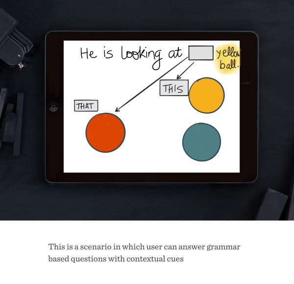

Design Interfaces for Autism
I, along with my fellow groups at Chalopadho designed software to be used in Tamana Autism Centre School of Hope, Delhi to enhance learning process during the computer sessions of autistic learners in the school. We gathered feedback from teachers and care-takers in the school to refine our product. The reaction of all users determined how successful we were in designing programs in such a challenging environments. A more robust approach was needed.
I led the user experience research of the application — the place where kids can select their avatar and play games — as well as playing a leading role in the design of the application.
Problem Statement
The computer classes of students at Tamana Autism Centre not at all involved computer software of any kind. No graphical interface was present and the techniques, while considered to be effective, were no better than paper-based exercises and activities. The maximum available tools were Microsoft word and paint tool. To enhance the learning process, a better product needed to be designed.
Target Audience
The target audience of this project was 5th-grade kids in the school. Other stakeholders included special education teachers who were teaching English curriculum and caretakers.
The problem here was that by trying to create something for everyone, we risked helping no one. In order to avoid this design equivalent of an identity crisis, it became necessary to focus on the needs and wants of our primary user i.e. kids. Another thing to be kept in mind is that needs are coming from the primary user(kids) and wants are coming from secondary user(teachers and caretakers)
On doing user research, we identified three key insights:
- Design should be simple.
"Adding too much information can cause cognitive overload" - Avoiding trigger cycle.
"Kids here are prone to mood swings." - Customizability as per teachers needs.
"I need my content to be more interactive."
So we had some insight into our user's wants, but we needed more information about user needs. We needed some design process to help guide design decisions, especially when we were at risk of creating one-size-fits-all features. It led us to three design principles:
- Observation phase.
This is the first stage of the process in which designer (me) acted as an observer. In this stage, I had to observe as a third person the interaction between caretaker and child and take notes accordingly. - Partial Engagement Phase.
This is the second stage in which I stepped in but in an incomplete way. This was mainly in order to take feedback from caretaker without disturbing the caretaker-child interaction. The feedback from the caretaker was taken afterward. - Intervention Phase
This is the final stage in which I had to step in and get actively involved in the participation among caretaker and child.
This design process was essential in understanding the gist of the problem. Some of the key observations in this process were :
While giving an classroom exercise on English, the teacher used images to make them answer simple “Fill in the blank” questions like, “_______ is a chair.” (Answer here is “That” and teacher used a far image of an object to illustrate the use of “that” in English)
She had difficulty adding spaces between the sentences. Then I used the paint program in the windows. And wrote the same text with spaces. She was able to imitate it properly. She was using contrasting colors like red and black.
Some boys have difficulty in recognizing a word like “is”..because there wasn’t any images associated with it.
Storyboards
Coming up with wireframes
We tried to design software that had consistent and limited options. Limitations were learnt from the routine observation and interaction with the caretakers and the children which gave us insights about more generic HCI paradigms for autistic people. Keeping in mind factors such as size of elements, color contrast, multimedia, following wireframe was built :

- 

Final Design
Based on the research, various prototypes were developed and a new learning game was designed for teachers and students. Screenshots are given as follows:

At the opening of the application, the kids select their avatar which takes their image and adds that to red face as shown. Once the avatar is selected, the user selects number of players (single-player/multiplayer). The child has to select the appropriate option by dragging towards the desired blank. So this "fill" in the blank game can use the same content the teacher uses to teach kids on the blackboard. After answering a question correctly, applaud sound was generated (which resulted in a positive behavior response.)
Feedback
The game metaphor proved to be a winning strategy as it combined ease of use, the simplicity, effective and bolstered the engagement. The reaction of children just by using the prototype was a good indicator to us that we were heading in the right direction. Some of the areas of improvement were:
- - Teachers needed more customization than just adding new questions.
- - The application wasn’t suitable for teaching new concepts. It was good for answering a certain type of questions.
- - Teachers were also worried about the learning outcome of kids. We could have defined clear learning goals from the beginning.
Some other projects
- Design Strategy at Chalopadho
Developed Content Strategy for the product to increase the engagement by 50% in teacher analytics. - Interactive Museum App
Incorporated various learning theories to engage kids like Constructivism, Behaviorism and Scaffolding. Our process involved defining learning goals, brainstorming, personas, storyboarding and wireframes. - Customer Experience Design
Improved visitor experience at UMMA by contextual inquiry and affinity analysis. Recommended solutions to the client in the end related to navigation in museum.